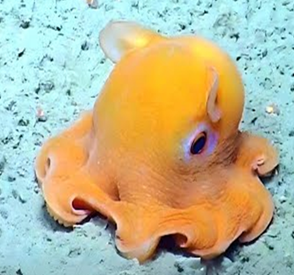

СЕМЕЙСТВА Grimpoteuthis, относящихся к семейству Opisthoteuthidae
ГЛУБИНА:3000–4000 метров
КОГДА ОТКРЫЛИ: известные с конца XIX века
ТИП ПИТАНИЯ:хищник, питающийся придонными организмами
Ключевые особенности поведения:
Способ передвижения: В отличие от других осьминогов, Дамбо плавает, взмахивая плавниками над мантией (похожими на уши), и использует щупальца, соединенные перепонкой, как парашют.
Защитные механизмы: При угрозе могут выпускать облако чернил (хотя у глубоководных видов чернильный мешок часто редуцирован) или использовать «ушные» плавники для быстрого маневра. Способны менять окраску, хотя и не так активно, как мелководные собратья
Одиночный образ жизни: Встречаются редко, проводят жизнь в холодной, темной бездне, почти не взаимодействуя с другими особями, кроме периода размножения. Осьминоги Дамбо (род Grimpoteuthis) считаются одними из самых глубоководных видов, адаптировавшихся к экстремальным условиям.
